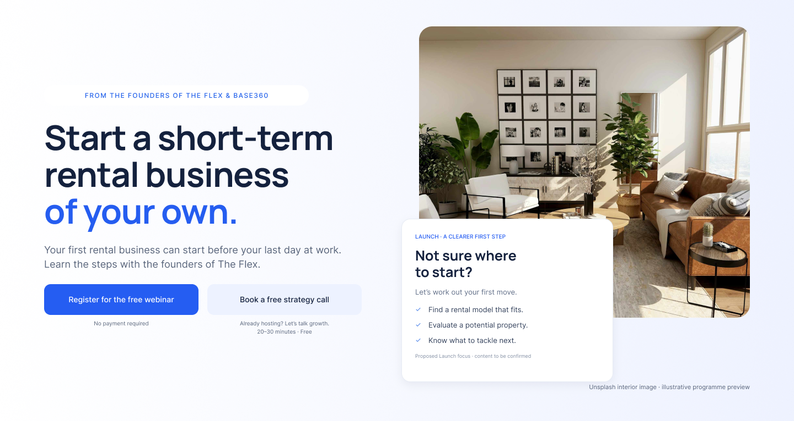
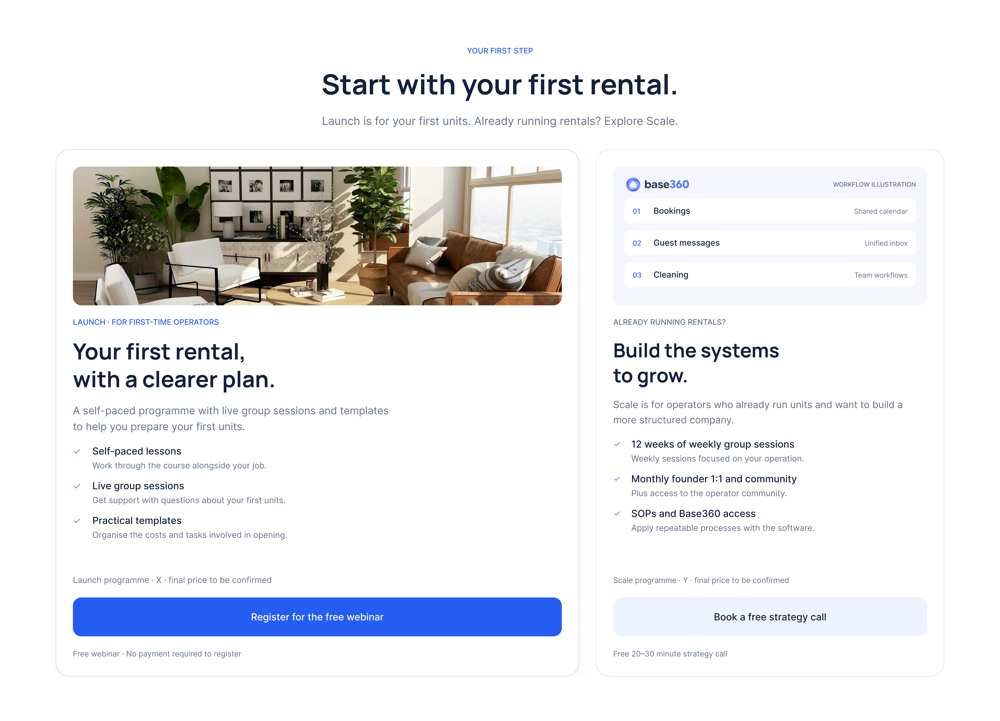
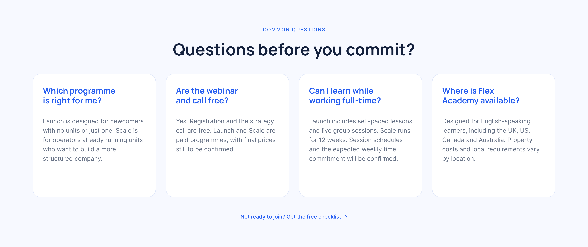
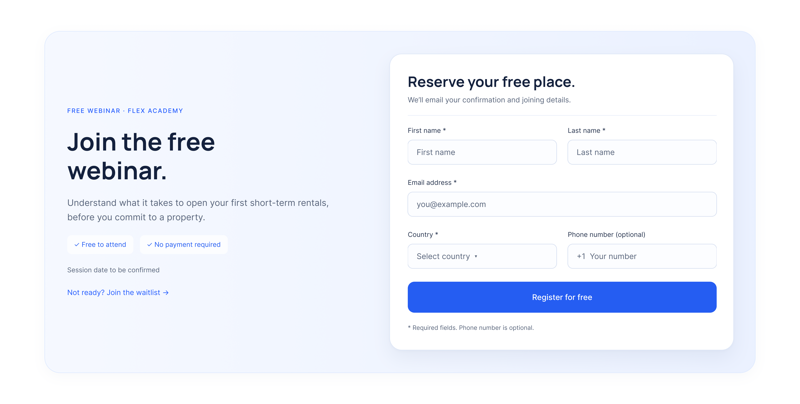
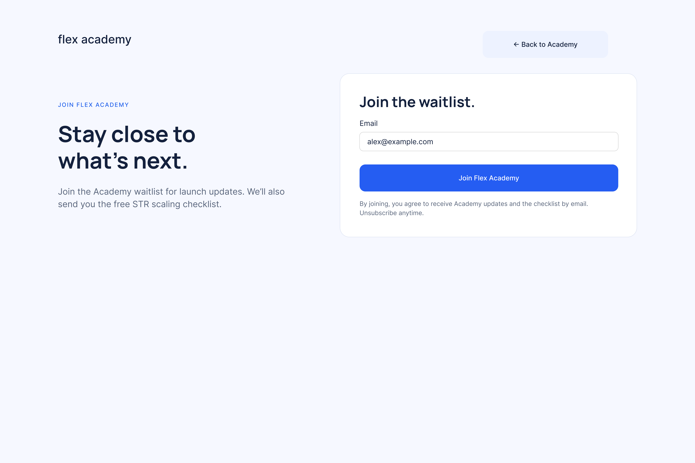

UX strategy / Web design / Conversion flows / Interactive prototype
FLEX ACADEMY
A responsive landing page connecting new and existing rental operators with relevant programmes and signup paths.
Project Overview
Flex Academy introduces short-term rental education backed by the operating experience of The Flex and Base360. The brief called for a credible new brand and distinct journeys for first-time operators and people already managing rentals.
I independently designed the information architecture, responsive UI, and interactive prototype. The page prioritises webinar registration for newcomers, with separate strategy-call and checklist paths for visitors with different needs.

01 / Problem & Audience
The Challenge
The page needed to establish credibility with visitors sceptical of online courses and help two audiences identify the right programme. The design had to distinguish their needs while keeping Launch, the brief’s priority, prominent.
Launch / First-time Operators
Guidance for preparing the first property.
Visitors starting alongside a full-time job, with no rentals or one unit, need guidance on preparing for their first property.
Primary action: Register for the free webinar.
Scale / Existing Operators
Operating support for the next stage.
Visitors already managing rentals need operating systems and support to reduce manual work and prepare for growth.
Primary action: Book a free strategy call.
02 / Design Decisions
Design Decisions
Hero
Prioritising Webinar Registration
I made webinar registration the primary CTA to reflect the brief’s focus on first-time operators. The headline identifies the business opportunity, while supporting copy addresses starting alongside a full-time job. A secondary strategy-call CTA gives existing operators a relevant alternative.

Programme Comparison
Differentiating Launch and Scale
I used an approximately 3:2 card-width ratio to prioritise Launch, with equal card heights and aligned buttons to support comparison. Audience-specific headings help visitors self-select; programme descriptions distinguish first-property preparation from support for existing operations.

Credibility
Connecting Claims to Operating Experience
I paired The Flex and Base360 logos with operating facts and source links, explaining the experience behind the Academy. These claims remain attributed to the original businesses, rather than being presented as Academy student outcomes.

FAQs
Addressing Questions Before Signup
Four visible answers address programme fit, starting alongside a job, existing rental experience, and the relationship between the brands. Placing them before registration lets visitors review these questions without opening additional panels or leaving the page.

Registration
Using One Consistent Destination
All webinar CTAs lead to the same inline form. This keeps registration connected to the programme information and avoids competing signup destinations. The form requests essential details, while a secondary strategy-call option remains available.

03 / Final Design
Responsive Landing Page
Scroll to explore ↓
04 / Conversion Flows
Webinar and Strategy-call Flows
A short inline form leads to a confirmation state, allowing visitors to register within the landing page. A separate booking flow collects context about the visitor’s rental business to support a relevant conversation.
A short inline form keeps the first commitment straightforward.
05 / Supporting Paths
Checklist and Waitlist
An email-only form offers a lower-commitment option for visitors still exploring. Compact confirmation states acknowledge each request without introducing another full page.
